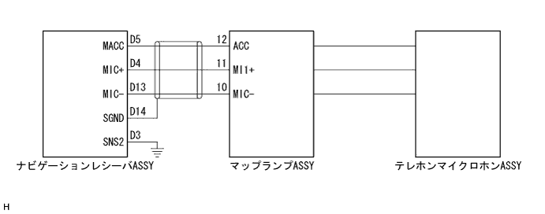
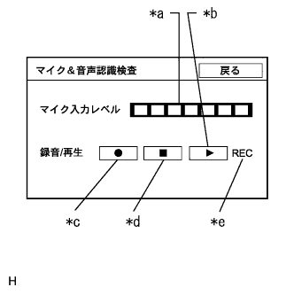
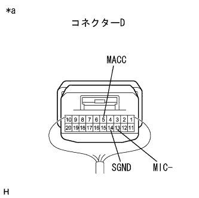
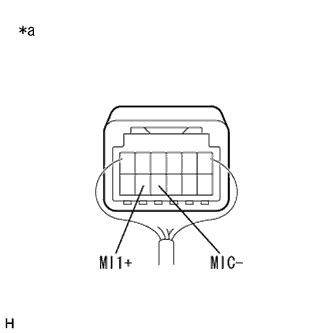

HDD Navigation System Beep Sounds when Voice Recognition Switch is Pressed, but Voice cannot be Recognized |

)| Step 1 | Start Diagnosis |
Reference| NEXT | |
| Step 2 | Microphone Check (Microphone Input Level) |
 |
Microphone Check (Microphone Input Level)
Select "Function Check/Adjustment" on the Service Check Menu screen to display the function check/adjustment screen.
Select "Microphone & Voice Recognition Check" on the function check/adjustment screen to display the microphone & voice recognition check screen.
Speak into the microphone and inspect the display of the microphone input level gauge.
| *a | Microphone Input Level Gauge |
| *b | Playback Switch |
| *c | Record Switch |
| *d | Stop Switch |
| *e | Recording Indicator |
|
| ||||
| OK | |
| Step 3 | Microphone Check (Recording and Playback of Spoken Voice) |
Microphone Check (Recording and Playback of Spoken Voice)
After pressing the record switch, speak into the microphone and record the voice.
Press the playback switch and check the recorded voice.
| *a | Microphone Input Level Gauge |
| *b | Playback Switch |
| *c | Record Switch |
| *d | Stop Switch |
| *e | Recording Indicator |
|
| ||||
| OK | |
| Step 4 | Re-operate (Voice Recognition) |
Re-operate (Voice Recognition)
Pay attention to how you speak and perform the voice recognition operation again.
|
| ||||
| OK | ||
| ||
| Step 5 | Inspect Wire Harness and Connector (Navigation Receiver Assembly - Map Light Assembly) |
Pre-inspection Preparation
Disconnect connector D of the navigation receiver assembly.
Disconnect the map light assembly connector.
Resistance Inspection
Using SST (Toyota electrical tester), measure the resistance between each terminal of the connectors of the vehicle wire harness between the navigation receiver assembly and map light assembly.
| Tester Connection (Terminal Symbol) | Condition | Standard |
|---|---|---|
| D5(MACC) - 12(ACC) | Always | Below 1 Ω |
| D4(MIC+) - 11(MI1+) | Always | Below 1 Ω |
| D13(MIC-) - 10(MIC-) | Always | Below 1 Ω |
Using SST (Toyota electrical tester), measure the resistance between each connector terminal of the navigation receiver assembly vehicle side wire harness and body ground.
| Tester Connection (Terminal Symbol) | Condition | Standard |
|---|---|---|
| D5 (MACC) - Body ground | Always | 10 kΩ or higher |
| D4 (MIC+) - Body ground | Always | 10 kΩ or higher |
| D13 (MIC-) - Body ground | Always | 10 kΩ or higher |
| D14 (SGND) - Body ground | Always | 10 kΩ or higher |
| D3 (SNS2) - Body ground | Always | Below 1 Ω |
|
| ||||
| OK | |
| Step 6 | Inspect Navigation Receiver Assembly (MACC, MIC-, SGND) |
Pre-inspection Preparation
Disconnect the map light assembly connector.
 |
Make sure that the navigation receiver assembly connector is connected.
Voltage Inspection
Using SST (Toyota electrical tester), with the navigation receiver assembly connector connected, measure the voltage between each terminal and body ground from the back side of the connector.
| Tester Connection (Terminal Symbol) | Condition | Standard |
|---|---|---|
| D5 (MACC) - Body ground | ACC ON | 4 to 6 V |
Resistance Inspection
Using SST (Toyota electrical tester), with the navigation receiver assembly connector connected, measure the resistance between each terminal and body ground from the back side of the connector.
| Tester Connection (Terminal Symbol) | Condition | Standard |
|---|---|---|
| D13 (MIC-) - Body ground | Always | Below 1 Ω |
| D14 (SGND) - Body ground | Always | Below 1 Ω |
| *a | Connector connected (Navigation receiver assembly) |
|
| ||||
| OK | |
| Step 7 | Inspect Telephone Microphone Assembly |
 |
Waveform Inspection
Turn ACC ON.
Using SST (TaSCAN), with the map light assembly connector connected, measure the waveform between terminals 11 (MI1+) and 10 (MIC-) from the back side of the connector.
| Result | Proceed to |
|---|---|
| Waveform synchronized with the voice spoken into the telephone microphone assembly is output | A |
| Waveform synchronized with the voice spoken into the telephone microphone assembly is not output | B |
| *a | Component with harness connected (Map Light Assembly) |
|
| ||||
| A | ||
| ||
| Step 8 | Replace Telephone Microphone Assembly |
Telephone Microphone Assembly Substitution Check
Prepare a new telephone microphone assembly and replace it. (see)
Check whether the malfunction recurs.
| Result | Proceed to |
|---|---|
| Returns to normal | A |
| Malfunction recurs | B |
|
| ||||
| A | ||
| ||